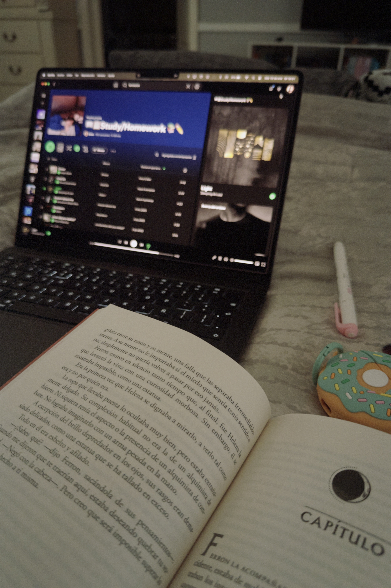
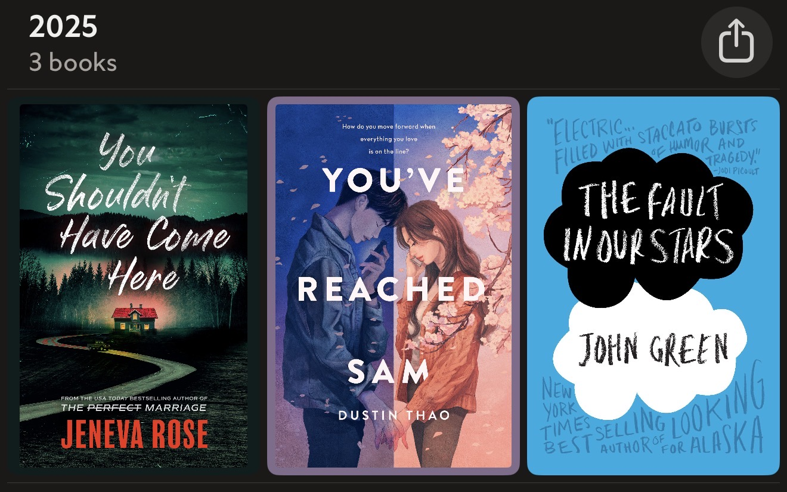
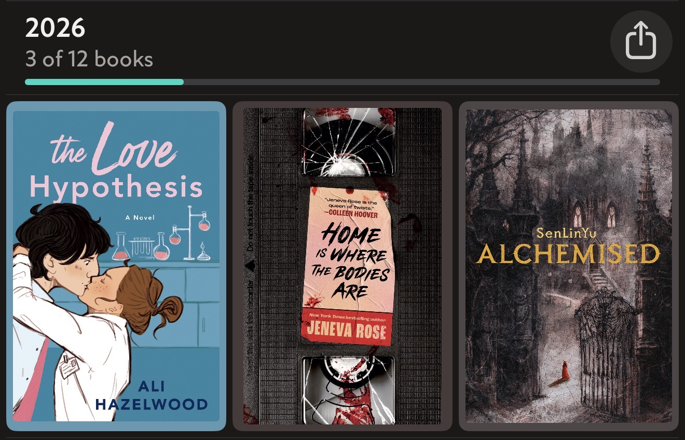

LEER
Este hobby de leer libros, recién lo empecé a tener desde finales del año pasado. ♥
Mis géneros favoritos de libros:
- Romance
- Suspenso
- Fantasía
Libros que leí en 2025:
Ratings:
- You've reached Sam → ⭐️⭐️⭐️⭐️⭐️ / 5
- You shouldn't have come here → ⭐️⭐️⭐️⭐️.5 / 5
- The fault in our stars → ⭐️⭐️⭐️⭐️ / 5
Libros que he leído en 2026:
Ratings:
- Alchemised → ⭐️⭐️⭐️⭐️⭐️ / 5
- The love hypohesis → ⭐️⭐️⭐️⭐️.5 / 5
- Home is where the bodies are → ⭐️⭐️⭐️.5 / 5